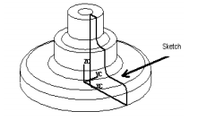
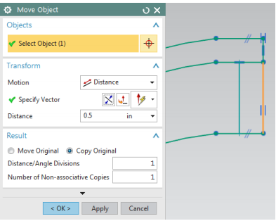
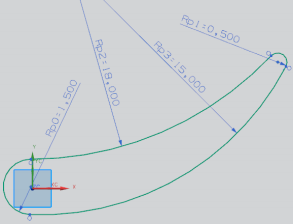

Week10 <<
Previous Next >> Week13
Week12
Batch Command
使用者在維護網站時，需開啟動態與近態頁面，必須以 python 執行位於 cmsimde 子目錄中的 wsgi.py，以及開啟位於倉儲根目錄中的 http-server.py，為了方便，所以在 y:\ 目錄建立下列兩個命令批次檔案:
cad.bat - 啟動 wsgi.py 並且在瀏覽器開啟 https 9443 動態網頁
|
1
2
3
4
|
@echo off
y:
cd tmp\cad2019\cmsimde
start python wsgi.py | start chrome https:
|
其中的 | 是同時執行 wsgi.py 的啟動以及瀏覽器網頁的開啟
而 cadh.bat - 啟動 http-server 並且在瀏覽氣開啟 https 8444 靜態網頁
|
1
2
3
4
|
@echo off
y:
cd tmp\cad2019\
start python http-server.py | start chrome https:
|
至於近端倉儲維護告一段落後, 啟動 gitextensions 開啟 cad2019 倉儲時, 使用:
cadg.bat
|
1
2
3
|
@echo off
y:
Y:\cad\201906_fall\data\GitExtensions\gitextensions.exe browse y:\tmp\cad2019\
|
操作影片:
1.到課程網頁的Tasks2中的Batch Command，並打開編輯器。
2.將各程式碼複製到編輯器，並確認自己的路徑是否相同。
3.存儲到Y槽，即可在start_mdecourse.bat打上cad.bat . cadh.bat . cadg.bat 做測試。
4.完成。
NX12使用手冊重點整理
第三章 2D草圖
在本章中，將學習如何在NX12中創建和編輯草圖，可以在建模(Plane in Modeling)應用程序中的平線上直接創建草圖，在大多數情況下，建模是從2D草圖開始的，然後拉伸.旋轉或掃掠草圖以創建實體，透過繪製草圖可以輕鬆地繪製許多其他很難建模的複雜形狀。
在本章中，將看到一些草圖繪製概念和對某些零件進行草圖繪製和建模。
3.1 概述
NX12草圖是一組被命名的曲線，這些曲線連接在一串字符串中，掃描後形成實體，草圖表示該零件的外邊界，曲線在草圖繪製中的平面上創建。
首先，這些曲線的繪製並沒有任何確切的尺寸，然後應用尺寸及幾何的約束來完全約束草圖，繪製完成後，可以使用多種方法來生成3D零件：
• 旋轉草圖

• 拉伸草圖

• 沿參考線掃掠草圖

從草圖創建的特徵與之關聯， 也就是說如果草圖發生變化，特徵也會發生變化。
使用草圖創建零件的優點是：
•用於創建輪廓輪廓的曲線具有優良機動性，可用於建模特殊的形狀。
•曲線是參數化的，因此具有關聯性，可以輕鬆更改或刪除它們。
•如果更改了繪製草圖的平面，則草圖也會相應改變。
•當您想要控制特徵的輪廓時，草圖非常實用，尤其是將來需要更改時，草圖可以
快速.輕鬆地進行編輯。
3.2 草圖環境
在NX 12中，可以使用兩種方法創建草圖。
➢(1)選擇菜單(Choose Menu)→插入(Insert)→草圖(Sketch)。

➢(2)在主工具欄中選擇草圖(Choose Sketch in Home toolbar)。
無論哪種情況，都會彈出一個功能框，要求定義草圖平面，螢幕將顯示草圖選項，
可以選擇草圖平面和草圖方向.草圖平面類型。
使用創建草圖功能框創建草圖時，可以通過點擊所示的座標系來選擇創建草圖的平
面在此座標系上，即顯示你選擇的平面，默認平面為XC-YC，然而你可以選擇在另一
平面上繪製草圖。
➢ 選擇XC-YC平面，然後點擊確定(Choose the XC-YC plane and click OK)。

將顯示草圖平面，並且標記X-Y方向，主螢幕將更改為草圖環境(Sketching Environment)，
XY平面顯示為繪圖的默認平面，這是基本的草圖窗口。
NX 12中還有一個特殊的草圖任務環境，它在主窗口中顯示所有素描工具，用於進入草圖任務環境。
➢ 直接在草圖工具欄區域中點擊更多選項
(Click the More option in the direct sketch tool bar area)
➢ 點擊在草圖任務環境中打開，如下所示
(Click on Open in Sketch Task Environment as shown below):

在完成標誌旁有三個實用的選項:
(1)可以在框中更改草圖的名稱
(2)面向草圖(Orient to Sketch)，用於將視圖定向到草圖的平面。
(3)如果在繪圖過程中旋轉了模型文件，點擊此圖標在與螢幕平行的平面上查看草圖。
將草圖重新附加(Reattach attaches)到其他平面，基準平面或路徑或更改素描方向。
允許將草圖重新附加到所需的平面，而無需重新創建所有曲線，尺寸和約束。
3.3 草圖曲線工具欄
該工具欄包含用於創建常用類型的曲線和樣條曲線.編輯.延伸.修剪.圓角等的圖標，
每種類型的曲線都有不同的選擇方法和創建方法。

最常用的選項:
 輪廓(Profile)
輪廓(Profile)
此選項會根據您在彈出工具欄中選擇的圖標創建直線和圓弧。
可以通過使用座標系或通過輸入線的長度和角度來點選此點，如圖所示。

 直線(Line)
直線(Line)
此選項將選擇性地創建直線。
 弧(Arc)
弧(Arc)
此選項有兩種方法可以創建弧。
(1)三點畫弧，如圖所示。

(2)創建具有中心點.半徑和後掠角的圓弧或者創建具有起點和終點的圓弧，如圖所示。

 圓(Circle)
圓(Circle)
創建圓類似於創建圓弧，不同之處在於，圓是封閉的。
 快速修剪(Quick Trim)
快速修剪(Quick Trim)
將從曲線的交點修剪延伸的曲線，如果每個實體與另一個實體相交，
則此選項通過拆分每個實體來讀取它們，並擦除所選部分。
 Studio樣條線(Studio Spline)
Studio樣條線(Studio Spline)
創建具有極點或具有曲線度的點之基本樣條曲線（B樣條曲線和Bezier）。

3.4 約束工具欄
有曲線都是通過點選之點創建的，舉例來說，兩點決定一直線。
在2D環境中，任何點都有兩個自由度，一個沿X軸，另一個沿Y軸。
所創建曲線的類型取決於點的數量，因此，曲線實體的自由度數是其包含的點的數量之兩倍，
這些自由度可以通過使用固定實體創建約束來消除。
實際上，建議你通過直接或間接將實體與固定實體相關聯來刪除所有這些自由度（使草圖完全受約束），
可以通過提供尺寸或幾何屬性（如平行度，垂直度等）來完成。
在NX 12中，智能約束是自動應用的，即NX12會解釋自動尺寸或幾何約束。
可以通過點擊連續自動標註( Continuous Auto Dimensioning)來關閉此選項，如圖所示。

 尺寸約束(Dimensional Constraints)
尺寸約束(Dimensional Constraints)
透過給尺寸賦予固定實體（例如軸，平面，坐標系或模型中創建的任何現有實體幾何形狀）的尺寸，可以消除自由度。
這些尺寸可以是線性.徑向.角度等。您可以在繪圖過程中隨時通過雙擊尺寸來編輯尺寸值。

 幾何約束(Geometric Constraints)
幾何約束(Geometric Constraints)
除了尺寸約束之外，還可以提供一些幾何約束以消除自由度。包括平行.垂直.共線.同心.水平.垂直.等長...等。
該軟件具有為所選實體找到可能約束的集合的能力。 例如，在下圖中的線上施加一個約束，
使其平行於矩形的左側（該線最初與矩形成一定角度）。

 顯示草圖約束(Display Sketch Constraints)
顯示草圖約束(Display Sketch Constraints)
點擊此圖標將以白色顯示與該特定草圖中的實體相關的所有選項。
 顯示/刪除約束(Show/Remove Constraints)
顯示/刪除約束(Show/Remove Constraints)
該窗口列出了與所選任何實體相關的所有約束和約束類型，可以刪除列出的任何約束或更改約束的順序，
不受約束的自由度數將顯示在狀態行中，這些都應該通過應用約束來遵循嚴格的模型來刪除。
3.5 範例
3.5.1 Arbor Press Base
操作影片:
1.點擊草圖(Sketch)按鈕，然後點擊確定(OK)。
2.選擇菜單(Menu)→插入(Insert)→草圖曲線(Sketch Curve)→點擊輪廓(Profile)或點擊輪廓(Profile)組中的
直接繪製(Direct Sketch)（記住要關閉連續自動尺寸標註(Continuous Auto Dimensioning)）。
3.繪製上圖之圖形，點擊輪廓(Profile)中的線(Line)及弧(Arc)來繪製直線及圓弧。
4.選擇插入(Insert)→幾何約束(Geometric Constraints)或點擊在側面工具欄中的約束(Constraints)。
5.選擇曲線上的點(Point on Curve)進行約束。
6.選擇Y軸，並選擇圓弧的中心;使用相同方法，使X軸也對準中心。
7.選擇兩條斜線並使兩線等長(Equal Length)，如圖所示。
8.選擇底部的兩條水平線，使兩線共線(Collinear)並點擊等長(Equal Length)，如圖所示。
9.如果沒有找到附近的兩個藍色圓圈（切線約束），如下圖所示，則選擇圓弧和連接到其端點的兩條垂直線之一，
點選切線(Tangent)。
如果圓弧和直線已經相切，則圖標將顯示為灰色，則點擊編輯(Edit)→選項(Selection)→取消全選(Deselect All)，
對圓弧和另一條垂直線重複相同的步驟。
10.使用等長(Equal Length)的方法，使圖形對稱。
注意:在加入約束後，草圖可能會失去幾何連續性，圖如所示，在此種狀況下，點選兩線的確切終點，
並點擊重合約束。(在尺寸與幾何約束有衝突，會以黃點顯示)。

11.在約束(Constraints)工具欄中選擇快速尺寸(Rapid Dimension)。
12.約束各線段的尺寸(依大到小尺寸開始約束)，如圖所示。
13.完成後，點擊螢幕左上角或右下角的完成標誌(Finish Flag)。
14.點擊草圖，並選擇拉伸(Extrud)。

15.在Z方向上將該草圖拉伸60mm，如圖所示。
16.完成。
3.5.2 Impeller Lower Casing
操作影片:
1.點擊菜單(Menu)→插入(Insert)→點擊草圖任務環境(Sketch In Task Environment)或
點選功能區的草圖任務環境(Sketch In Task Environment)中的。
2.將繪圖平面設置為XC-YC平面。
3.繪製下圖曲線。
4.透過點擊直接繪製(Direct Sketch)中的加號，在原點（0，0，0）上創建一個點。
5.點擊幾何約束(Geometric Constraints)。
6.選擇原點處的點，並點擊固定約束(Fixed)（如果看不到此圖標，則點設置(Settings)並按下圖所示進行檢查）。
7.使所有曲線和直線之節點相切(Tangent)。
8.約束尺寸，如下圖。
9.選擇所有尺寸，並點擊右鍵隱藏所有尺寸。
10.選擇菜單(Menu)→編輯(Edit)→移動物件(Move Object)或從功能區欄中選擇移動曲線(Move Curve)。
11.選擇所有曲線，在選擇物件(Select Object)中可以看到4個物件，將其中的動作(Motion)改為距離(Distance)。
12.在指定向量(Specify Vector)中選擇YC方向，並在距離(Distance)中輸入0.5英吋。
13.在功能框中，點擊複製原物件(Copy Original)，並點選確定(OK)。
14.使用基本曲線將兩端點連接起來以完成草圖。
15.選擇編輯(Edit)→移動物件(Move Object)或從功能區欄中選擇移動曲線(Move Curve)。
16.選擇下方曲線，並向Y軸方向移動-1.5英吋。
17.使用直線將此曲線與內部曲線連接，如圖所示。
18.選擇編輯(Edit)→移動物件(Move Object)。
19.選擇外線，如下圖所示。
20.將此線向X軸移動-0.5英吋。

21.使用直線將兩條線連接起來，如圖所示。
22.點擊完成標誌(Finish Flag)，即完成。
3.5.3 Impeller
操作影片:
1.點擊草圖(Sketch)，並將草繪平面設置為XC-YC平面，然後點擊確定(OK)。
2.點擊菜單(Menu)→插入(Insert)→基準/點(Datum/Point)
→點(Point)或在點(Point)的功能區欄中點擊直接繪製(Direct Sketch)。
3.創建兩個點，一個在原點(0，0，0).一個在(11.75，6，0)。
4.點擊側邊工具欄上的弧形(Arc)圖標，並點擊彈出式工具欄中的中心點及端點畫弧(Arc by Center and Endpoints)。
5.點擊原點上的點，並創建一個半徑為1.5的圓弧，如圖所示。
6.點擊（11.75，6，0）處的點，並創建半徑為0.5的圓弧。
7.點擊彈出工具欄中的3點畫弧(Arc by 3 Points)。
8.選剛剛創建的兩個弧的頂部端點，並點擊兩者之間的某個位置以創建另一個連接的弧，對底部端點執行相同操作。
9.點擊側面工具欄中的約束(Constraints)，並確認所有弧在其端點處相切(Tangent)。
10.點擊原點上的點，並點擊固定約束(Fixed)。
11.點擊快速尺寸(Rapid Dimension)，並約束每個圓弧的半徑(Radius)尺寸，
以使末端的兩個圓弧分別為1.5和0.5英寸，兩個中間的圓弧分別為18和15英寸，如圖所示。

12.點擊完成標誌(Finish Flag)，即完成。
3.6 練習
3.6.1 圓形底座(Circular Base)

操作影片:
3.6.2 固定器(Sketching of a Holder)

Week10 <<
Previous Next >> Week13